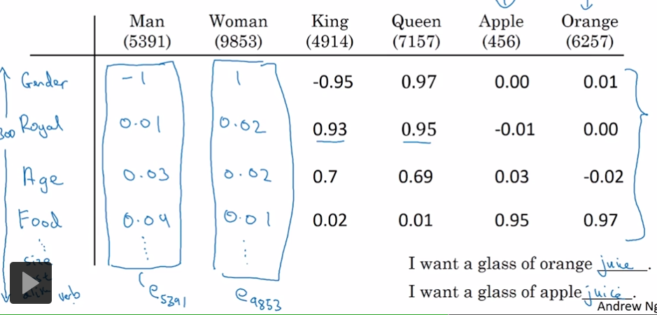
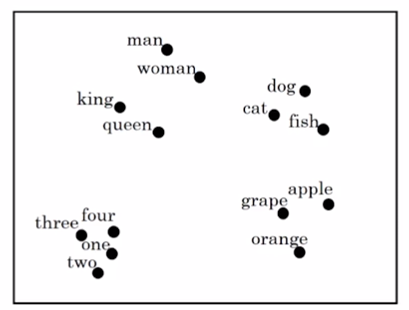

1. 特征化表示： word embedding
Word Embedding是基于特征的representation。

这只是一个人为构造的例子。实际上这个矩阵中每一行的含义以及矩阵中的数值都是DL学习出来的，每个维度的含义不一定能被 人理解。
1.1. 可视化embedding
van der Maaten and Hinton., 2008. Visualizing data using t-SNE
使用t-SNE把n维的embedding转换到二维的空间。

1.2. word embedding的优点
- word embedding通过非常大量的语料库（1-100B）生成。
使用者可以预先训练好或者直接下载开源的word embedding，然后把它迁移到自己的模型中并微调。 - 即使自己的模型只有很小的训练集（100K），也能有比较好的效果。
- embedding向量比one-hot向量小。
word embedding广泛应用于NLP问题中，这是一种迁移学习。
2. Word Embedding VS Face Encoding
word embedding和face encoding的原理类似，区别是使用时：
face encoding输入的可能是没有见过的图像。
word embedding输入的是字典中的单词。
3. Embedding Matrix
假设单词表的大小为10000，embedding后每个单词的维度是300，则Embedding矩阵E的维度是300 10000
例如单词ID是6527，它的One-hot Embedding记为，维度是10000 1，它的Word Embedding记为，维度是300 * 1，则：
实际上不会使用这种矩阵乘法来计算Word Embedding，而是使用专用的列查找算法。